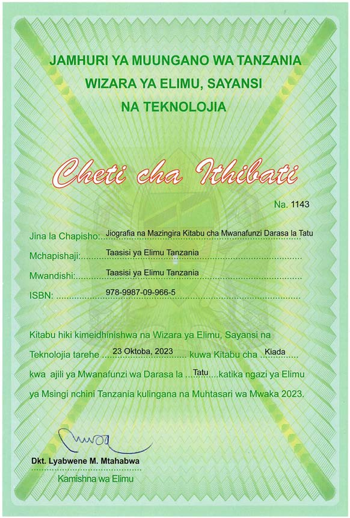

Jiografia na Mazingira
Kitabu cha Mwanafunzi
Darasa la
Darasa la 3

JAMHURI YA MUUNGANO WA TANZANIA
WIZARA YA ELIMU, SAYANSI NA TEKNOLOJIA
Cheti cha Ithibati
Na. 1143
Jina la Chapisho: Jiografia na Mazingira Kitabu cha Mwanafunzi Darasa la
Tatu
Mchapishaji: Taasisi ya Elimu Tanzania
Mwandishi: Taasisi ya Elimu Tanzania
ISBN: 978-9987-09-966-5
Kitabu hiki kimeidhinishwa na Wizara ya Elimu, Sayansi na Teknolojia tarehe 23
Oktoba, 2023 kuwa Kitabu cha Kiada kwa ajili ya Mwanafunzi wa Darasa la Tatu katika ngazi ya Elimu ya
Msingi nchini Tanzania kulingana na Muhtasari wa Mwaka 2023.
Dkt. Lyabwene M. Mtabhwa
Kamishna wa Elimu
Taasisi ya Elimu Tanzania